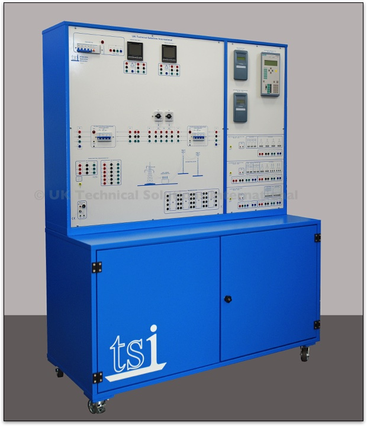

TSI-PTSS 5030 Substation Module
This module simulates a bus system with circuit breakers that allows connection between the high voltage lines and the medium voltage distribution network .
It comprises a substation transformer and a medium voltage output bus system.
The substation transformer has three output voltages (V, V/1.73, V/3). This allows the user to investigate different voltage distribution systems. Two switches are used to select the voltages available on the primary and secondary windings.
The transformer has primary voltages (for Delta connection) of 120 - 220 - 380V and secondary voltages (for Star connection) of 69 - 127 - 220V.
It comprises three 1-phase 100 VA power transformers. This solution allows you to simulate both 1-phase and 3-phase transformers.
The substation module is equipped with two digital multifunction 3-phase instruments for measuring voltage, current, active power, reactive power, power factor and harmonics. These units have both numerical and graphical display facilities.
It also includes a PST (Phase Shifting Transformer) for load flow problem simulation. This is based on a transformer with an angular displacement.
Protection Relays
A series of different protection relays are installed on the Substation Module. These include:
1 x Multifunction differential relay (87).
This protection relay provides differential protection for electrical machines (generators, motors and transformers) against internal faults. It also provides the following additional protections:
- Undercurrent (37)
- Reverse-phase or phase-balance (46)
- Machine or transformer thermal relay (49)
- Instantaneous over-current (50)
- AC time over-current relay (51)
- Trip Circuit Supervision (74)
1 x Multifunction current relay.
- This provides the following protections:
- Max current (50/51)
- Max residual current (50N/51N)
- Monitoring of open circuit of the switch (74TCS)
- Setting the differential protection for substation transformer
1 x Non-switched distance protection relay with 6 measuring systems (21/21N).
This provides:
- High resistance ground-fault protection for single and three-pole tripping (50N, 51N, 67N)
- Ground-fault detection in isolated and resonant-grounded networks
- Tele (pilot) protection (85)
- Fault locator (FL)
- Power-swing detection/tripping (68/68T)
- Phase over-current protection (50/51/67)
- Switch-onto-fault protection (50HS)
- STUB bus over-current protection (50STUB)
- Over-voltage/under voltage protection (59/27)
- Over/under frequency protection (81O/U)
- Auto-reclosure (79)
- Synchro-check (25)
- Breaker failure protection (50BF)
- Thermal overload protection (49)
This relay also includes:
Distance Protection Zones. All the distance protection zones can be set to forward, reverse or non- directional. Different curves and delays are programmable in order to allow selectivity in current and in time. All programming operations, modification, measurement display, are possible directly from the front panel or by using a personal computer with the included software connected to the relay.
Fault Locator The integrated fault locator calculates the fault impedance and the distance-to-fault. The results are displayed in ohms/kilometres (miles) and in a percentage of the line length. Parallel line compensation and load current compensation for high resistance faults are also available.
A 24 V a.c. output for feeding the auxiliary release circuits of the line protection circuit breakers is also provided on the unit. The voltage is supplied by a 50 VA transformer that allows a maximum current draw of 2 A from the 2 mm safety sockets. The output is protected by a 2.5 A fuse.
A unique system of Transfer Blocks is also included on the unit to allow simple electrical connections with equipment located on the other modules.